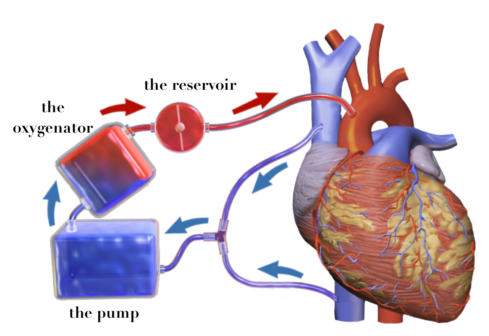
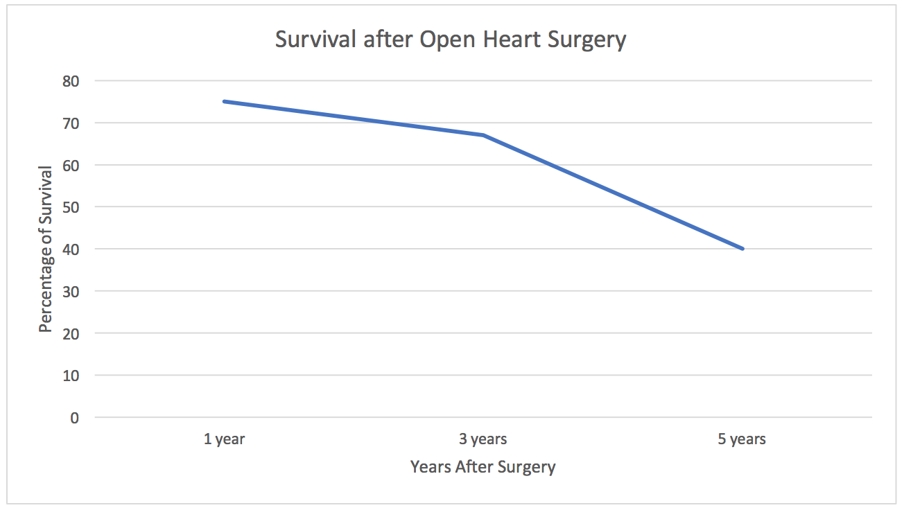

It is even posed in an argumentative fashion in some circumstances, and doctors have been called more than once to explain whether a given surgical procedure was or was not really “open heart surgery.” The confusion surrounding the term is quite understandable, since the term “open heart surgery” was coined over two decades ago and is vague today when applied to the large area of cardiac surgery.
Perhaps the term was coined originally because the heart surgeon was concerned with methodology which allow him to correct congenital heart defects entailed opening the cardiac chambers for repair. This nosological consideration for procedures performed within the heart chambers overlooked the area of common ground which set cardiac surgery apart in terms of magnitude and risk - the need to relieve the heart of needing to beat while operating on it. Heart operations are best grouped together by the need of providing an external mechanical support system to substitute for the function of the heart and lungs in pumping and oxygenating blood. Any heart operation that requires the heart either be stopped for the procedure, or undergo such manipulation that it cannot continue functioning, would fit this classification. The external mechanical support system referred to is, of course, the “heart-lung machine.” What is today implied by the term “open heart surgery” in common medical jargon, then, is any cardiac operation requiring the use of the “heart-lung machine.”
What does the “heart-lung machine” do? First, let’s exchange that term for “cardiopulmonary bypass” to aid in our understanding. Basically, cardiopulmonary bypass removes the use of the heart and lungs as a unit from the circulatory system and temporarily bypasses them while performing their function for them. To accomplish this, blood is diverted from the heart by tapping into the great veins delivering blood from the upper and lower extremities. This blood flows by gravity into an oxygenating device, which performs the lungs’ function of adding oxygen and dissipating carbon dioxide. This blood is then pumped back into the circulatory system through a convenient artery, usually the aorta, the great artery that comes immediately from the heart. It can be seen then, that with this system functioning, appropriately placed surgical clamps on the venous and arterial sides of the heart and lungs would totally isolate them. This allows the surgeon to stop the heart if he wishes and perform his operation in a precise and unhurried fashion. The cardiopulmonary bypass unit pump-oxygenator cannot do this job indefinitely, but sufficient time is safely at hand with today’s equipment. Improvement in this equipment has, more than any other factor, led to the successes we routinely enjoy today. One question frequently asked is about the blood supply to the heart and lungs themselves during this period of “bypass.” Their blood supply is markedly reduced since they are removed from the circulatory system, but since they are at rest, oxygen requirements are minimal, and for the duration of most procedures no problems are posed.

This study was done on older individuals (85-years and older) about their survival rates after open heart surgery. As always, there is risk with any surgery.

For more information visit: Healthline